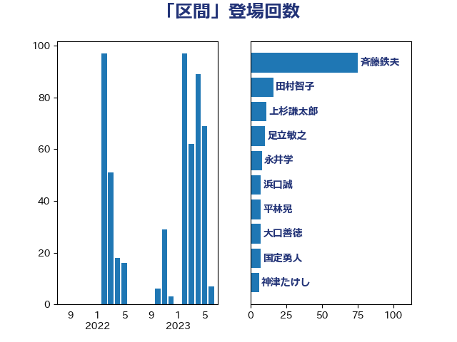

単語「区間」

| 斉藤鉄夫 | 公明党 | 75 回 |
| 田村智子 | 日本共産党 | 16 回 |
| 上杉謙太郎 | 自由民主党 | 11 回 |
| 足立敏之 | 自由民主党 | 10 回 |
| 永井学 | 自由民主党 | 8 回 |
| 浜口誠 | 国民民主党 | 7 回 |
| 平林晃 | 公明党 | 7 回 |
| 大口善徳 | 公明党 | 7 回 |
| 国定勇人 | 自由民主党 | 7 回 |
| 神津たけし | 立憲民主党 | 6 回 |
| 瀬戸隆一 | 自由民主党 | 6 回 |
| 日下正喜 | 公明党 | 6 回 |
| 中川康洋 | 公明党 | 6 回 |
| 高橋千鶴子 | 日本共産党 | 5 回 |
| 福島伸享 | 無所属 | 5 回 |
| 湯原俊二 | 立憲民主党 | 5 回 |
| 吉井章 | 自由民主党 | 5 回 |
| 中野英幸 | 自由民主党 | 5 回 |
| 西田昭二 | 自由民主党 | 4 回 |
| 石原正敬 | 自由民主党 | 4 回 |
| 山添拓 | 日本共産党 | 4 回 |
| 大野泰正 | 自由民主党 | 4 回 |
| 加藤鮎子 | 自由民主党 | 4 回 |
| 今枝宗一郎 | 自由民主党 | 4 回 |
| 青山大人 | 立憲民主党 | 3 回 |
| 豊田俊郎 | 自由民主党 | 3 回 |
| 若林健太 | 自由民主党 | 3 回 |
| 紙智子 | 日本共産党 | 3 回 |
| 上田英俊 | 自由民主党 | 3 回 |
| 鬼木誠 | 立憲民主党 | 2 回 |
| 西銘恒三郎 | 自由民主党 | 2 回 |
| 菅家一郎 | 自由民主党 | 2 回 |
| 石井苗子 | 日本維新の会 | 2 回 |
| 田村貴昭 | 日本共産党 | 2 回 |
| 深澤陽一 | 自由民主党 | 2 回 |
| 池下卓 | 日本維新の会 | 2 回 |
| 森屋隆 | 立憲民主党 | 2 回 |
| 梅谷守 | 立憲民主党 | 2 回 |
| 山本剛正 | 日本維新の会 | 2 回 |
| 尾崎正直 | 自由民主党 | 2 回 |
| 小林一大 | 自由民主党 | 2 回 |
| 小山展弘 | 立憲民主党 | 2 回 |
| 井坂信彦 | 立憲民主党 | 2 回 |
| たがや亮 | れいわ新選組 | 2 回 |
| 高橋光男 | 公明党 | 1 回 |
| 高木陽介 | 公明党 | 1 回 |
| 青島健太 | 日本維新の会 | 1 回 |
| 階猛 | 立憲民主党 | 1 回 |
| 鈴木敦 | 国民民主党 | 1 回 |
| 酒井庸行 | 自由民主党 | 1 回 |
| 谷田川元 | 立憲民主党 | 1 回 |
| 蓮舫 | 立憲民主党 | 1 回 |
| 船橋利実 | 自由民主党 | 1 回 |
| 美延映夫 | 日本維新の会 | 1 回 |
| 篠原孝 | 立憲民主党 | 1 回 |
| 穀田恵二 | 日本共産党 | 1 回 |
| 石井浩郎 | 自由民主党 | 1 回 |
| 田中健 | 国民民主党 | 1 回 |
| 渡辺猛之 | 自由民主党 | 1 回 |
| 櫻田義孝 | 自由民主党 | 1 回 |
| 櫛渕万里 | れいわ新選組 | 1 回 |
| 森田俊和 | 立憲民主党 | 1 回 |
| 本田太郎 | 自由民主党 | 1 回 |
| 末松義規 | 立憲民主党 | 1 回 |
| 木村次郎 | 自由民主党 | 1 回 |
| 斎藤アレックス | 国民民主党 | 1 回 |
| 徳永久志 | 無所属 | 1 回 |
| 岸田文雄 | 自由民主党 | 1 回 |
| 小熊慎司 | 立憲民主党 | 1 回 |
| 大西健介 | 立憲民主党 | 1 回 |
| 堤かなめ | 立憲民主党 | 1 回 |
| 嘉田由紀子 | 無所属 | 1 回 |
| 倉林明子 | 日本共産党 | 1 回 |
| 中根一幸 | 自由民主党 | 1 回 |
| 三上えり | 立憲民主党 | 1 回 |